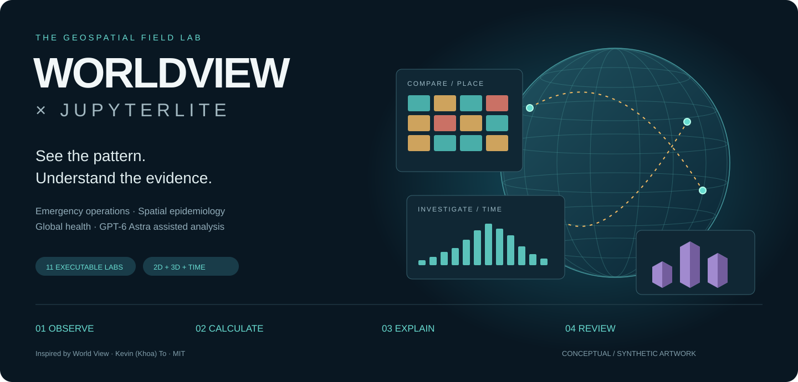

See the pattern.
Understand the evidence.
A geospatial field lab in your browser. Move from a map to a calculation, from a 3D scene to a question, and from evidence to a reviewable briefing with GPT-6 Astra.
Explore the EOC → Start the first notebook

A shared picture
Compare counts and population-normalized patterns. Inspect sources, shift time windows, and import your own notebook layers.
02 / EXPLORESpace meets time
Explore an ellipsoid globe, extruded districts, three perspectives, and a time-aware supply flight.
03 / EXPLAINEvidence meets Astra
Prepare cited briefings, critique map interpretations, and evaluate AI output against reproducible calculations.
11 executable labs · no key needed for the public demo · clearly labeled synthetic health scenarios. Optional Astra API calls run separately with your own credentials. Live USGS/ISS feeds remain in the public-feed dashboard.
Educational companion to World View by Kevin (Khoa) To. A separate implementation with an upstream integration adapter. Credits and licenses · Source repository